Many apps need to establish the user’s Identity in order to customize the app to the user’s desires, save their data, allow them to identify themselves in social circles and countless other scenarios. There are many ways that you can allow your users to identify themselves, such as implementing a sign in functionality of your own, where you manage your users and their credentials, or, as is becoming increasingly more common, you can allow them to sign in using their credentials from commonly used platforms such as Facebook, Twitter or Google.
To support this, we’ve built the Google Identity Platform and the services it provides, including Google Sign-In for Android, iOS and the Web, the Google Identity Toolkit, that allows you to integrate multiple identity providers, plain OAuth 2.0 for typical sign in scenarios, and the Chrome Identity API which allows users to sign into your Chrome Apps.
In this lab, you’ll learn how to provide sign-in functionality to your Android App, built using Android Studio, using Google Sign-In.
Google Sign-In is a technology that allows you to get users into your apps quickly and securely with little development work required. It allows you to create a seamless experience across screens for your users -- they sign in once, and are authenticated on all of your devices. It allows you to integrate Google’s services into your websites and mobile apps, and also enables over-the-air installation of Android apps when users sign into your web sites. In this lesson you’ll learn how to add Google Sign-In to your android app -- and how to manage the workflow of your users signing into your app.
Before beginning, check that you have all the necessary pre-requisites. These include:
- Android Studio
- An Android Device that runs Android 4.2.2 or later -or- A configured Android Emulator (this is available in Android Studio)
- The latest version of the Android SDK including the SDK tools component. You can get this from the Android SDK Manager in Android Studio.
- The Google Play Services SDK. You can get this from the Android SDK Manager in Android Studio.
Before you start coding any of the Android functionality, you need to turn on the Sign-In APIs for your App in the Google Developer’s console. You’ll see how to do that in this section.
Create a Project
To create a project, visit the developer’s console at: https://console.developers.google.com/project.
Press the ‘Create Project’ button, and you’ll see a popup like this:
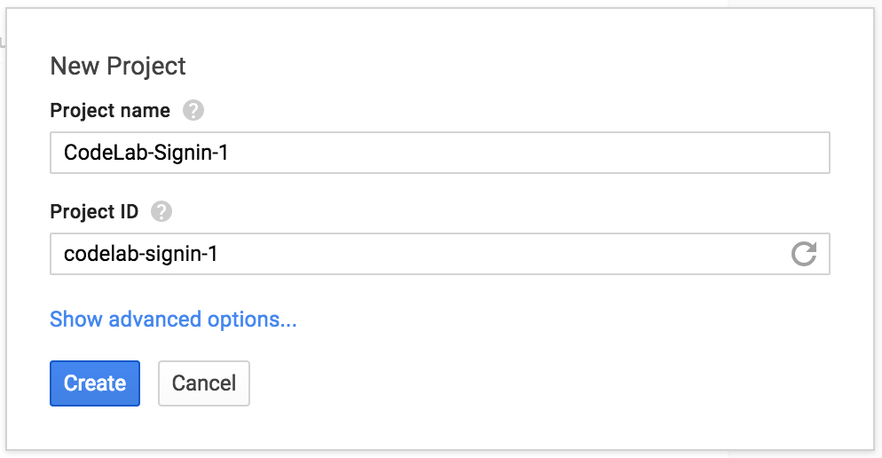
Enter a meaningful name for your project in the ‘Project name’ box. For the project ID, you’ll need to enter something that is unique across all of Google’s infrastructure. So, sorry codelab-signin-1 is taken :)
When you’re done, agree to the terms and press ‘Create’, and the console will create a project for you. After a few minutes you’ll be directed to the project’s home page, which will look like this:
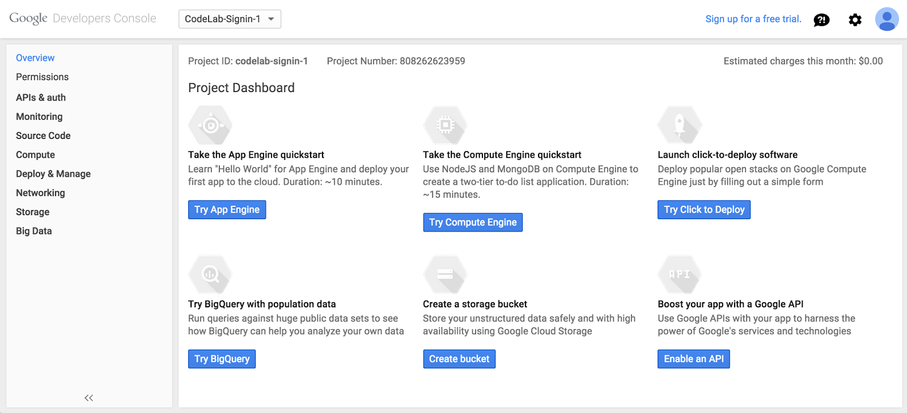
Enable the Google+ API
Select ‘APIs & auth’ on the left hand side of the screen. It will open, revealing a sub menu containing the items APIs, Credentials, Consent screen and Push. Select ‘APIs’ and you’ll see a screen containing all available APIs.
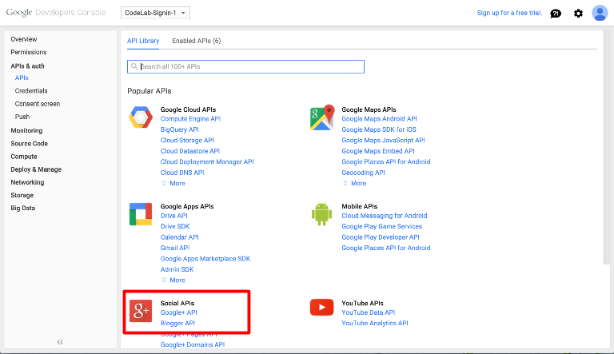
Find the Google+ API. You can either scroll down to find it (as you can see in the above image), or you can search for it in the search box. Select it, and you’ll be taken to a screen that allows you to enable it.
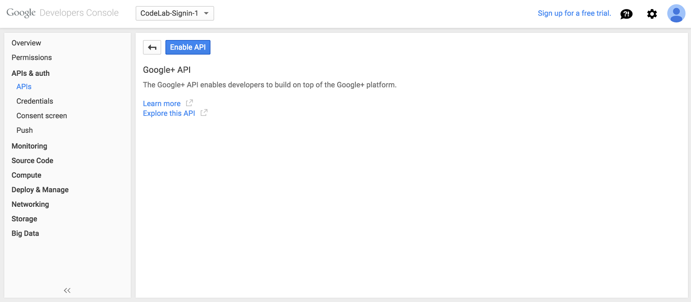
Click ‘Enable API’ to turn on the API. Once it’s enabled, the button changes to ‘Disable API’, and you get a popup informing you that it’s enabled:
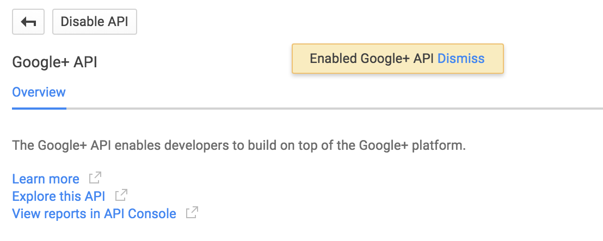
Be sure to leave the console page open. You’ll be using it in the next step.
Configure Credentials
In this step you’ll configure the credentials for your application. Google uses this to ensure that your application isn’t a fake application attempting to use our infrastructure. For the purpose of development you’ll use a debug certificate. When you deploy your app to the Play Store, it will need a ‘real’ certificate, and steps for getting one are available here: https://developer.android.com/tools/publishing/app-signing.html. Once you have the certificate, you identify it by it’s SHA-1 fingerprint.
Get your SHA-1
You can access your SHA-1 in the debug keystore.
- On a Mac or Linux, this is in the ~/.android directory.
- On Windows it is at C:\Users\<your user name>\.android. C:\Users\<your user name>\.android.
Note that the .android folder is hidden so you will not be able to see it in Finder or Windows Explorer.
Open a terminal (Command Prompt on Windows) and issue the following command (changing ~/.android.debug.keystore to the appropriate path for your OS):
You’ll should see output like this:
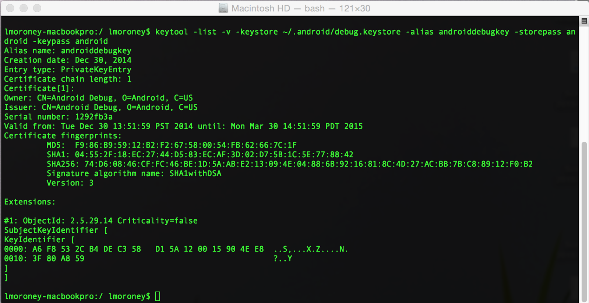
If you look closely, you’ll see a line that reads ‘Certificate fingerprints’, followed by a number of different ones. Take note of the SHA1. In this screenshot, you can see that my SHA1 is:
Take note of yours, you’ll will need it in the next step.
Configure your Consent Screen
In the developer's console, select the ‘Consent screen’ link in the APIs & auth section.
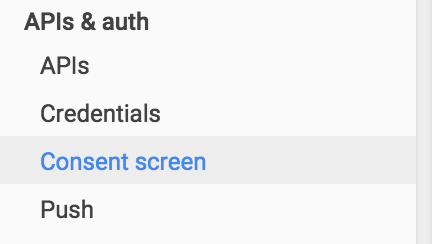
You'll see a screen where you specify details about your product to form a consent screen. You must provide your email address and Product name. Everything else is optional. An example of a consent screen is shown on the right hand side. You’re probably familiar with seeing these if you’ve run any Android apps on your phone that require user permissions, and signin is no exception.
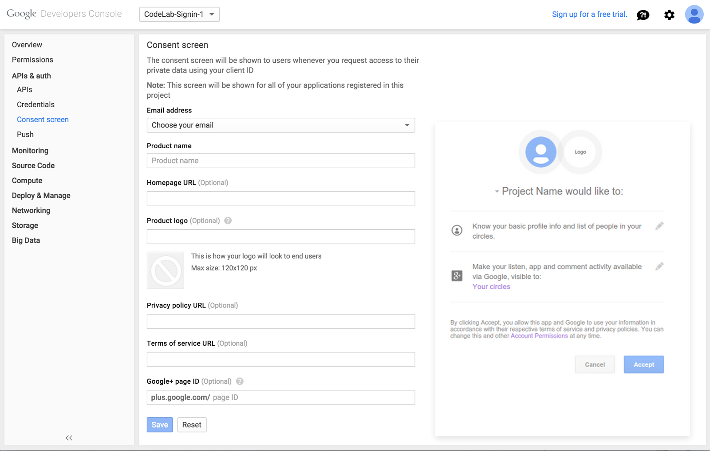
When you’re done, press the ‘Save’ button at the bottom of the screen.
Configure your Credentials.
Now that you have the SHA1 key, and the consent screen is configured, it’s time to create your credentials.
Select the ‘Credentials’ link on the left.
You’ll see a screen asking you to pick either OAuth or Public API Access.
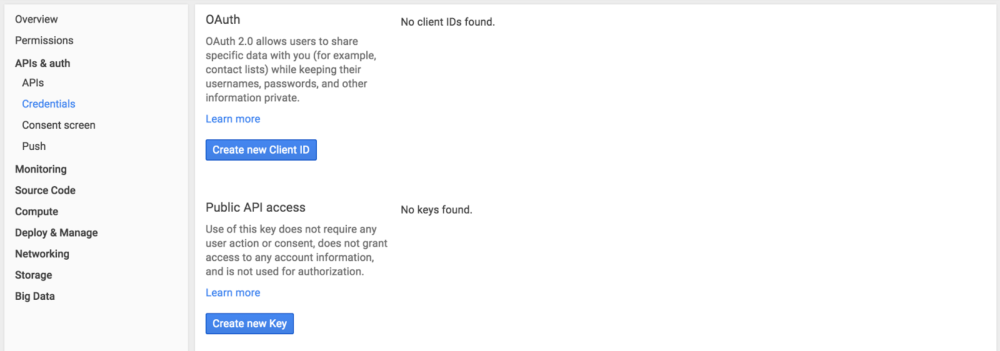
Under OAuth, select ‘Create new Client ID’.
A screen will pop up, asking if you want a Web application, Service account or Installed application.
Choose ‘Installed Application’, and choose ‘Android’. Enter the Package name you will be using in your app. You'll be creating a new project so it can be whatever you like, such as com.yourname.codelab1. (You'll need to remember it when you create your project later.)
Add the SHA1 you got earlier. You can leave Deep Linking Disabled.
Important: Remember the package name you entered. You’ll need it later, because it has to match the package name of your app.
Here’s an example:
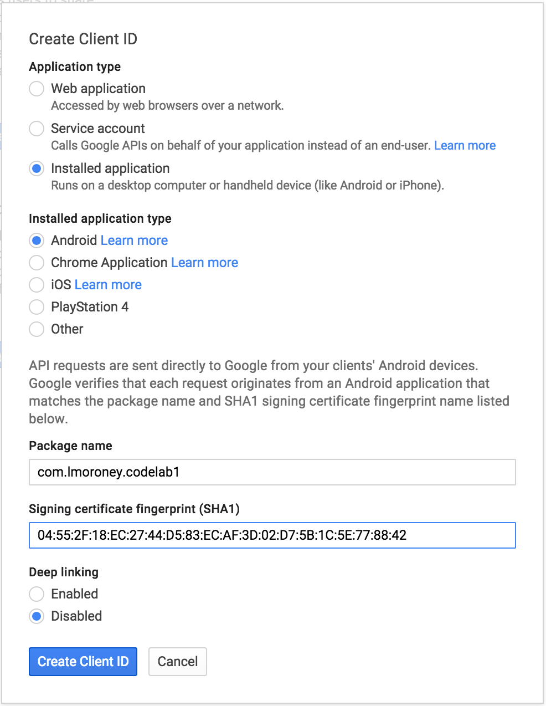
Click Create Client ID, and after a few moments you’ll be taken back to the credential screen, and the Client ID will be ready.
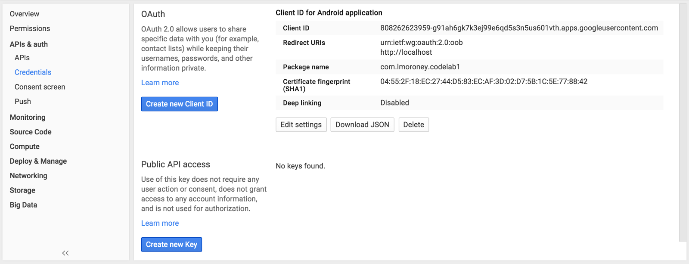
You’re now ready to begin coding your app!
In this step you’ll create the basic skeleton of an app that you’ll fill in later by adding the sign in code.
Create the new App
Open Android Studio. When you launch Android Studio, you’ll see an option to ‘Start a new Android Studio project’. Select this. You’ll see the ‘New Project’ dialog. Enter the details for your app.

Press Next, and you’ll get a screen asking to ‘Target Android Devices’. Accept the default here, and press Next to the next screen.
You’ll see ‘Add an activity to Mobile’ dialog. Ensure that you select ‘Blank Activity’ here.

Click ‘Next’ and you’ll be asked to customize the Activity. Just accept the defaults, and press ‘Finish’.
Configure Build.gradle
In this step you’ll ensure that your app can use Google Play services, in which the APIs for signin reside. To do this, you’ll first update your build.gradle file.
In Android Studio, open the Gradle Scripts node, and select build.gradle (Module App) as shown:

This will open your build.gradle file, at the bottom of which will be code like this:
Add a dependency for play services like this:
If you are asked to perform a gradle sync, do so. Otherwise, find the Gradle Sync button on the toolbar and press it to trigger a sync. It looks like this:
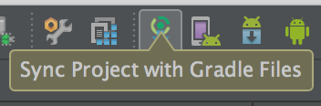
Now your project has all of the dependencies you need to integrate with Google Sign-In.
Update Google Play Services
Google Play services is frequently updated and this codelab assumes you have a recent version. To get the latest version, in Android Studio click Tools > Android > SDK Manager:
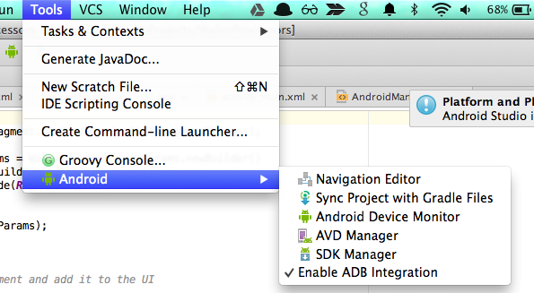
Then find the entry for Google Play Services and make sure you have version 23 or higher:
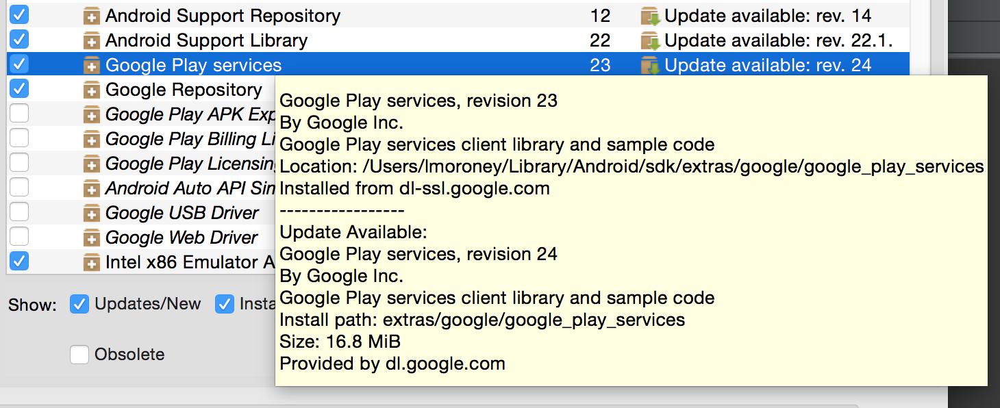
Configure AndroidManifest.xml
The AndroidManifest file is the source of all the information your Android device knows about your application. You will need to make some small changes in order to configure your app to use Google Sign-In.
In your Android studio project, you’ll see a number of folders, one of which is the ‘manifests’ folder:
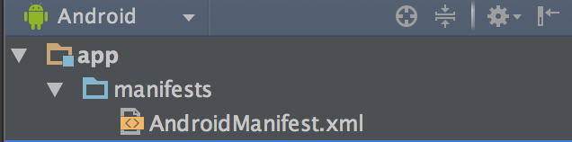
In the manifests folder, find and open your AndroidManifest.xml. Add the following code just above the closing </application> tag:
The value field references a resource that is contained within the Google Play Services client library you added as a dependency earlier. This tells the manifest which version of Google Play Services you expect so that you app will run properly on as many devices as possible.
Finally, add the following lines above the <application> tag and inside <manifest>:
Build a Basic UI
Now that your app is fully configured, it’s time to build a UI that lets the user sign in and sign out. You will build a basic UI with a Sign In button that looks like this:
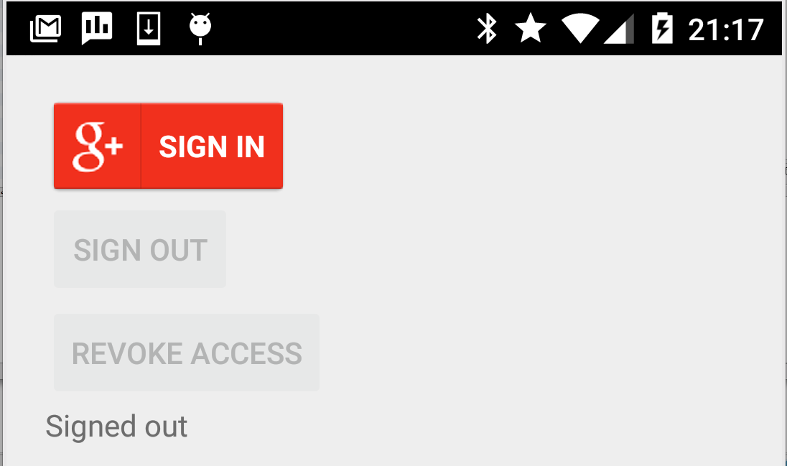
In Android Studio, select the ‘res’ folder, and open it’s ‘layout’ subfolder. In here you’ll see ‘activity_main.xml’.
Double click to open it in the editor, and be sure to select the ‘Text’ tab at the bottom of the editor to get the XML text view of your Layout. Android Studio Should look something like this:
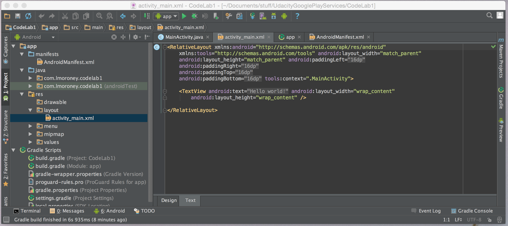
You can see that your layout contains a single <TextView> node. Delete this and replace with:
Note: Don't worry if you get an error in Design View in Android Studio, just work in Text View if this happens.
This layout gives you a Sign-In button, and a couple of buttons for signing out and revoking access. It also provides a TextView where the status of the sign in procedure will be displayed. You are now ready to begin coding the application.
Now that you’ve set up a ClientID on Google’s infrastructure for your Application, configured the application to use Google Play services with the correct permissions, and have created a basic UI, it’s time to start writing the code for your application’s sign-in flow.
Extend your Main Activity
Let’s start by extending the Main Activity of your application to use the Asynchronous callback functionality of Google Play services. Open the file MainActivity.java:
First add a couple of imports to the top of the Main Activity declaration:
Right now your MainActivity declaration looks like this:
Change it to:
If you are using Android Studio, this will lead to a number of new imports being added at the top of your code file. Go ahead and accept them, you’ll need them. If this doesn’t happen, check your work against the code so far to ensure you have the correct imports.
Right now the code will be red-underlined, indicating errors. Don’t worry about this -- it’s telling you that the interfaces you are implementing expect some functions to be overridden, and you haven’t done that yet. You’ll do it shortly.
Implement Constants and Class Variables
As you write the code there are a number of variables and constants that are shared across various functions. Put all of these below the MainActivity declaration, but before the first function (which is likely the OnCreate one).
First are the constants. Just declare these for now. You’ll see what each does when you use them.
Next are some variables that will represent various objects or data that you’ll need. Again, you’ll see what each of these does when you’re using them.
Finally add the declarations for the controls on the User Interface.
Implement OnCreate()
When Android starts your app, and activates your activity, the OnCreate() method fires as the operating system ‘creates’ the activity. Code within your OnCreate() function will then execute.
At the moment, your onCreate code looks like this:
Replace it with the following code. This code will link your MainActivity java code to the UI you created earlier and also initiate the GoogleApiClient which you will use to control sign-in.
You may notice that buildGoogleApiClient is showing as an error -- that’s because we haven’t created it ye!. You’ll do that in the next step. The GoogleApiClient class his is the main entry point for Google Play services applications, you can find detailed documentation on it here. You will be implementing buildGoogleApiClient() in the next step.
Build the Api Client
In the previous section, as well as setting up the UI controls, you also assigned your GoogleApiClient to the results of a function called buildGoogleApiClient(). You hadn’t created this function yet, so you’ll do that in this step.
The Google Api Client is the main entry point to Google Play services. To create one, you need to specify a number of things:
- Location of Connection Callbacks. The Google Api Client is highly asynchronous in nature, and needs functions implemented somewhere that it calls when it’s connected (onConnected) and when the connection is suspended (onConnectionSuspended). In this lab you’ll code these in this activity, so you set the location for the connection callbacks to this.
- Location of Connection Failed callback. It also needs you to specify the location of the onConnectedFailed function which runs if there’s a failure in the connection
- The APIs that you want to use. Google Play services supports lots of APIs, so you specify which ones you want to connect to here.
- In the case of logging in, you also specify the Login Scope. This defines the amount of information about the user that your app will access. Details on scopes can be found here. You’ll be using email scope in this lab -- which only gives access to the user’s email address for identification rather than their full Google+ profile.
Add the buildGoogleApiClient() method to MainActivity. The full definition is:
Implement onStart() and onStop()
When your activity starts is the ideal time to connect the Google API Client to Google Play services. Similarly, when it stops is the ideal time to disconnect it.
Override the onStart() and onStop() methods to do exactly that with the followint cod:
Handle Suspended scenarios
Occasionally the connection to Google Play services can drop out. It doesn’t disconnect, but gets lost for some reason. If this happens, the best thing to do is to try to reconnect.
Add the onConnectionSuspended() method:
Handle Connection to Google Play services.
When using Google Play services with signin -- the moment the app connects to the services is the moment the user is signed in. When the onConnected() callback executes, you know the user is connected. For this lab, you’ll enable the buttons, and get some details about the user. Remember you are using email scope which only gives access to their email address, so we’ll get that. If you try to get other information about the user (for example, their circle of Google+ friends), you’ll get an exception.
Add the onConnected() method to MainActivity:
Note that we set the mSignInProgress to STATE_SIGNED_IN. This is used by the app to track the status of signing in. You’ll see how that is used in the next step.
Handle Connection Failures
Signing in with Google is a little unique when it comes to connection failures. Typically a connection failure to Google Play services happens because you don’t have connectivity, but when using signin, it will more frequently happen because the user is in a transitional state, where they aren’t fully signed in yet. There may be two intermediate steps, and when the user hasn’t completed them, Google Play services returns a connection failure.
The first of these two steps happens when the user has more than one Google account registered on the device. Android will show them a dialog asking which account it should use. At this point, your connection has failed.
The second of these steps happens when the app shows a dialog to the user asking if they will give permissions to the app to access information based on the specified scope.
As a developer, you handle this as connection failures in onConnectionFailed, and you repeatedly try to reconnect. This is where the mSignInProgress and the various constants you defined earlier STATE_DEFAULT, STATE_SIGNED_IN and STATE_IN_PROGRESS are used.
Add the onConnectionFailed() and resolveSignInError() methods to MainActivity. Here’s the code:
The onConnectionFailed() method checks to see if the sign in process is still in progress, and if it is, it gets the intent that was returned by the callback. This intent will represent the dialog asking the user to sign in, or that asking the user for their permissions. If this is the case, the resolveSignInError() method is called. This checks the intent, and flags that the sign in is still in progress. The user’s response with the intents can be handled in onActivityResult().
Add the onActivityResult() method to MainActivity. Here’s the code:
As the user resolves the intents by answering the dialogs presented, the flow will eventually lead to a connection to the API (if their credentials are correct) or a ‘real’ failure (if they aren’t). Should we reach the latter -- the onSignedOut() function (in onConnectionFailed) will be called. You’ll implement that next.
Implement onSignedOut()
When the user signs out, or if their sign in fails for some reason, your app needs to to update the UI, disabling the sign out and revoke access buttons, and enabling the log in utton so that they can the user can again.
Add the onSignedOut() method to MainActivity. Here’s the code:
Implement the onClick handlers
The final step is to implement the click handlers for the three buttons. Earlier (in onCreate()) you specified that this activity would contain them, so you can achieve this by implementing an onClick override in this activity, and checking which UI element (a View in this case) triggered the callback.
Add the code to MainActivity to define the onClick behavior for the buttons. Here’s the code:
This code will ignore any button clicks if the GoogleApiClient is in the process of connecting. Otherwise, for the sign in Button, it will change the status text to Signing In, and enter the resolution of Sign In errors. Remember that if Android shows the ‘pick which email address’ or the permissions dialog, these will be treated as ‘errors’.
For the sign out button, the default account will be cleared, so that on next sign in the user will be given a choice of which ID to use when signing in. Also, the client will disconnect and reconnect.
Finally, for revoking access, the user will be signed out, and access that they gave to the profile will be revoked. In other words, if the user signs in, and gives permission to the email profile, and then signs out, then on further sign in, they shouldn’t need to give the same permissions. However, if they revoke access, then on future sign-ins, they’d have to give access again in order to be able to sign into the application.
That’s it. You’re now ready to run and try out your app!
This section assumes you are using an emulator in Android Studio. For details on setting up an emulator, see the Android Studio documentation. The following screenshots are based on a Nexus 5 profile in the emulator. Of course, it also works great with a physical device attached to your computer! :)
First Run
When the app first loads, the user will see something like this. The status reads that they are signed out, and they will get a button for ‘Sign In’, ‘Sign Out’ and ‘Revoke Access’. Note that in this screen shot the Sign In button is red and uses the G+ branding. This may appear differently for you -- and if so, don’t worry, you’re just using a later version than mine.
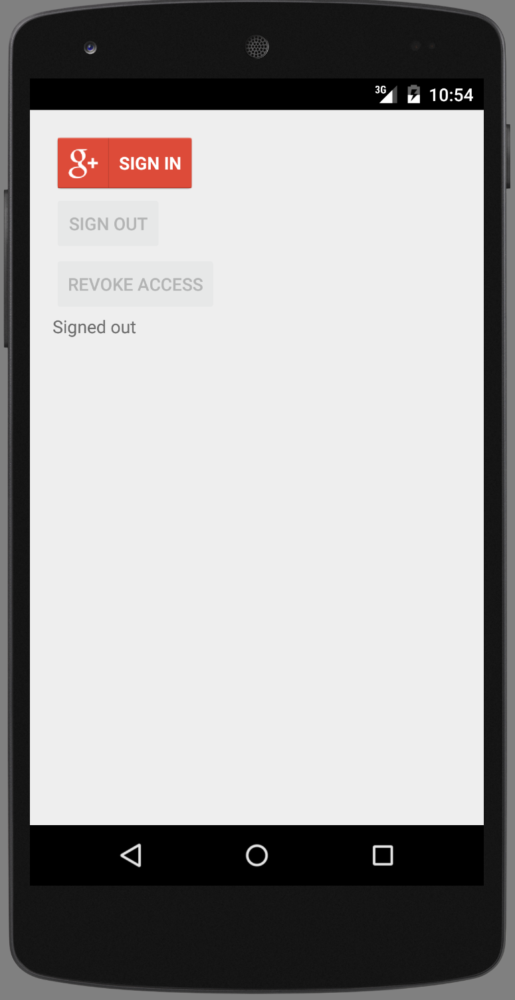
User Touches Sign-In Button
In this case, I’ve never been signed in, so Android checks to see if I want to use my on-device Google account or specify something else. This is the first of the ‘errors’ in connecting that the app will handle.
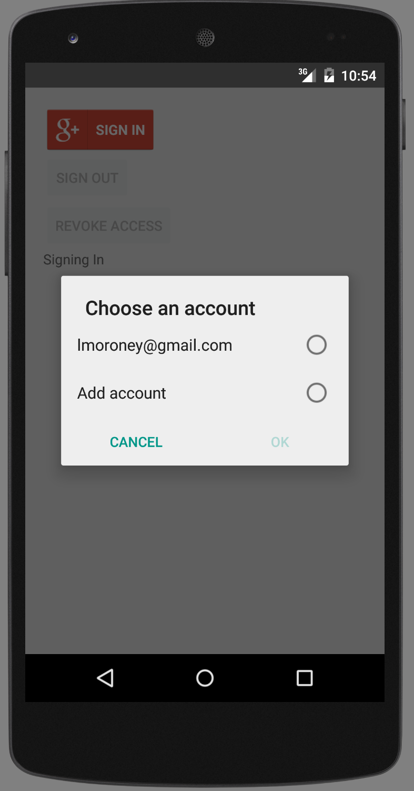
User Consent
Earlier, you specified a consent screen. This is what is displayed here. As the scope used was email, then the scope listing is just ‘Know who you are on Google’. For other scopes the list would appear longer. In order to sign in, the user has to give their consent to that information access. Again, for the purposes of this app, this delay in connecting/signing in is treated as an ‘error’. That’s why the ‘resolveSignInError()’ function exists.
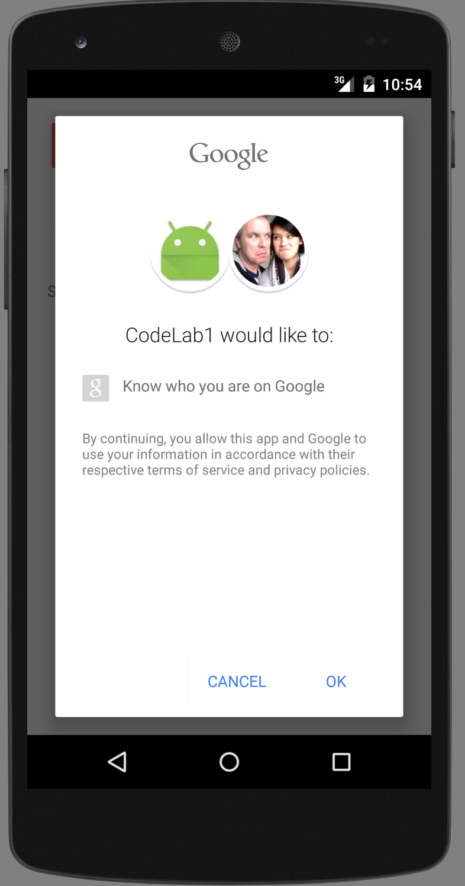
Successful Connection - User is Signed In
Once the user accepts the Consent, all errors should be handled, and there’s nothing further preventing them from signing in, other than incorrect credentials. If they successfully sign in, the UI gets updated to disable the sign in button, and enable the Sign Out and Revoke Access buttons. It will also update the status with the meta data that it was able to get from the User’s identity -- namely their email address. Remember that this is based on the scope that we defined. If you want access to more information -- such as profile pictures, friends circles etc, you need to change the scope, and the user has to grant you that access via the consent screen.
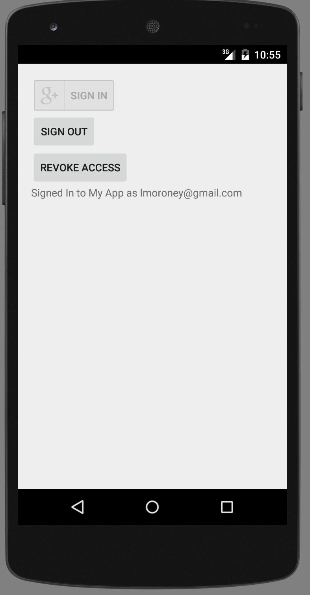
In this lab you went end-to-end in creating a simple application that provides sign in to Google using your Google Account. You saw how to use the developer console to give the app permissions to use Google’s infrastructure via getting a Client ID, and also how to define the consent screen that is presented to the user. You then created a simple Android App, added Google Play services to it, configured and coded it! You now have all the tools you need to build Google Sign-in functionality into your own apps!
- Watch this great devbyte video:
Coffee with a Googler: Chat with Ryan Troll about sign in and security - Take the Google Play Services Online Course.